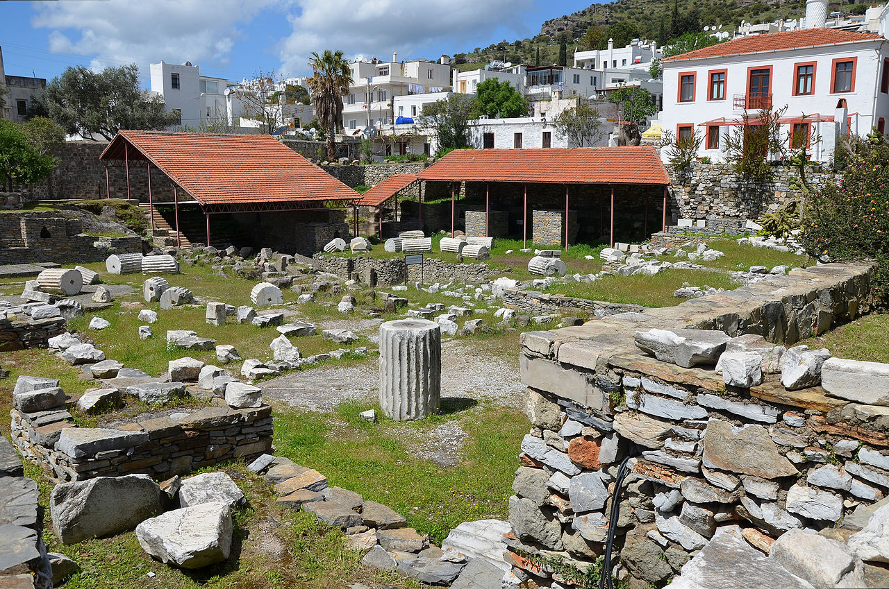

The Mausoleum at Halicarnassus or Tomb of Mausolus (Turkish: Halikarnas Mozolesi) was a tomb built between 353 and 350 BC at Halicarnassus (present Bodrum, Turkey) for Mausolus, a satrap in the Persian Empire, and his sister-wife Artemisia II of Caria. The structure was designed by the Greek architects Satyros and Pythius of Priene.
